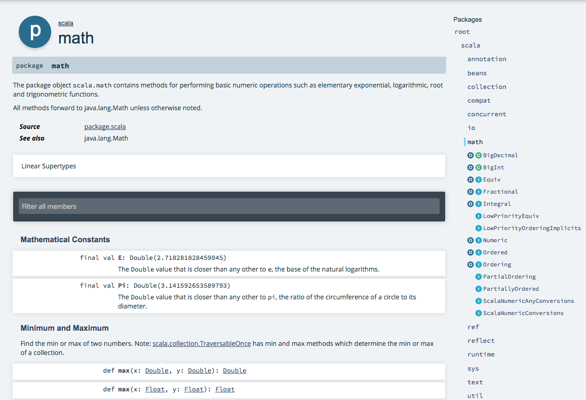

Essentials
Mauricio Saavedra
Training objectives
- Get familiar with Scala's expressions.
- Learn to define variables, values and functions from expressions.
- Understand the difference between evaluation strategies.
- Become familiar with scaladoc.
- Overview of Scala interoperability.
What skills will the trainee obtain?
- The trainee will be able to make the most basic operations in Scala.
- Will be able to decide which evaluation strategy use for each case.
- Will be able to write its own documentation and read other library documentation.
Agenda
- Scala expressions, types and values.
- Evaluation strategies.
- Understanding the JVM: Basics of Scala interoperability.
- Consulting existing libraries Scaladocs and how to produce your own.
- Documenting your work.
Expressions
A unit of code that returns a value after executed.
"hello world"
1 + 1
5 < 3Variables and Values
val values cannot change value.
val number: Int = 5
val yes = truevar values can change value.
var name = "Ramiro"
name = "Bogdan"Def
Works pretty much as val.
def number: Int = 15 + 5
def word = "Weird"
def print = println("")Functions
An expression that takes parameters.
(x: Int, y: Int, z:Int) => (x + y)*zUsing def
def product(x: Int, y: Int, z:Int) = (x + y)*z
def sameResultAlways(a: Int, b: Double): Boolean =
{
println("I don't care about your input")
true
}Boolean Expressions
Constant
true
falseNegation
val a: Boolean
!aConjunctions and disjuntions
val a: Boolean
val b: Boolean
a && b
a || bComparisons
a < b
a <= b
a > b
a >= b
a == b
a != bConditionals
We can build conditional expressions by using a boolean expression and an expression block.
if (a > b) {
println("calculating percentage")
b/a*100
}
else {
println("calculating percentage")
a/b*100
}Types
Scala is a statically typed with type inference language.

AnyRef
AnyRef types should take parameters.
val middleName: List[Option[String]] =
List(Option("Carlos"), None, Option("Guadalupe"))Evaluation Strategies
No matter the evaluation strategy used it will reduce to the same value, as long as we only have pure functions and the evaluation terminates.
- When evaluating by call-by-value (cbv) we first evaluate the arguments of the function and then we substitute on the body of the function.
- When evaluating by call-by-name (cbn) we first substitute on the body of the function the arguments as they are.
cbv
//This function will be evaluated as cbv
def sum(x: Int, y: Int): Int = x + yThe evaluation will be made as follows:
sum(3*2+5, 2+3)
sum(6+5, 2+3)
sum(11, 2+3)
sum(11,5) = 11 + 5 = 16cbn
//both parameter will be evaluated as cbn
def sum(x: => Int, y: => Int): Int = x + yWill evaluate:
sum(3*2+5, 2+3) = (3*2+5)+(2+3) = (6+5)+(2+3) = 11 + (2+3) = 11 + 5 = 16The JVM
The JVM has two main proposes:
- Allowing any program to run in every device or operating system.
- Managing and optimizing memory usage.
Scala is built on top of the JVM. Other languages build the same way are: Kotlin, Groovy, Clojure.
Interoperability
Since Scala is a JVM language it can interoperate with other JVM languages. Some of the most simple examples of Java/Scala interoperability are related to collections. We can pass back and forth between Java and Scala for the following collection types:
Iterator <=> java.util.Iterator
Iterator <=> java.util.Enumeration
Iterable <=> java.lang.Iterable
Iterable <=> java.util.Collection
mutable.Buffer <=> java.util.List
mutable.Set <=> java.util.Set
mutable.Map <=> java.util.Map
mutable.ConcurrentMap <=> java.util.concurrent.ConcurrentMapScala libraries
The usage of SBT as build tool, simplifies the integration of libraries. Dependencies will be handled by adding them to the buil.sbt file.
For example if you require ScalaTest library, you only have to add:
libraryDependencies += "org.scalactic" %% "scalactic" % "3.0.5"
libraryDependencies += "org.scalatest" %% "scalatest" % "3.0.5" % "test"
resolvers += "Artima Maven Repository" at "http://repo.artima.com/releases"
addSbtPlugin("com.artima.supersafe" % "sbtplugin" % "1.1.3")Once installed we should only import it in the desired project as:
import org.scalatest._Scaladoc
Scaladoc is based on Javadoc, it works by using comments directly before the items that are going to be documented.
It can automatically generate API documentation and will place it under the target directory of your SBT project by just running:
bash $ sbt doc
The result is such:

Going through Scaladoc
The documentation is sorted by packages. Specific classes can be sorted by name by using the search bar. Once you are browsing a package you will the screen on the next slide.
On the center there are a list of methods. On the right a list with a (t), (o) or (c) symbol that will take you to the trait, object or class.

Documenting your work
Scaladoc comments should start with /** and end with */. In general a good Scaladoc should contain a quick summary of the function, at the beginning. A more complex description of the subject documented can go next. Finally a group of tags, should close the documentation of the subject, which can be: @constructor, @return, @throws, @param, @tparam, @see , @note, @example, @usecase.
For example:
/** This function multiplies the addition of two numbers
*
* @param x term1
* @param y term2
* @param z multiplier
* @return (x + y)*z
*/
def product(x: Int, y: Int, z:Int) = (x + y)*z